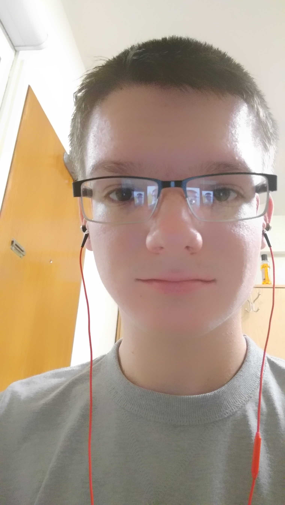
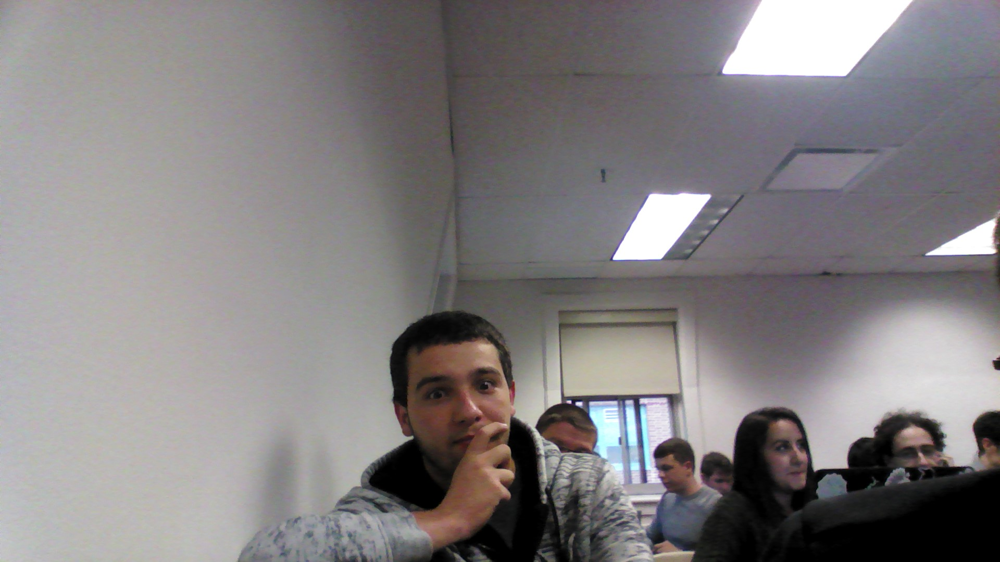

Meet the First Hands!
Christopher Landolfi

CJ has had a largely successful carrer. With numerous gold medals for badminton as well as owning a wildly successful thoroughbread horse racing team, CJ leads a very modest lifestyle. In his spare time he enjoys to watch shows on the popular online streaming service Netflix as well as what he calls "Chill." He decided to come out of his early retirement after his tightrope walking accident to help create this website.
Hyungho Seo

Hyungho is an up-and-coming professional food sceintist. He has recently discovered a groundbreaking correlation between eating food and his hunger levels. "Food is good," he ovserves.
Harkirat Kang
Kirat is a student at Stevens Institute of Technology who dabbles in art and enjoys binge watching TV shows in her free time. Swipe right.
Evan Hampp
Evan is a freshman here at Stevens. Known by his friends as an amateur chef who enjoys creating the most ingenious and invigoration of roasts as well as, his love for salt.
Matthew Lubanski
Matt one day came down from the mountain with nothing on his back, speaking only Portuguese. We know nothing of his past.